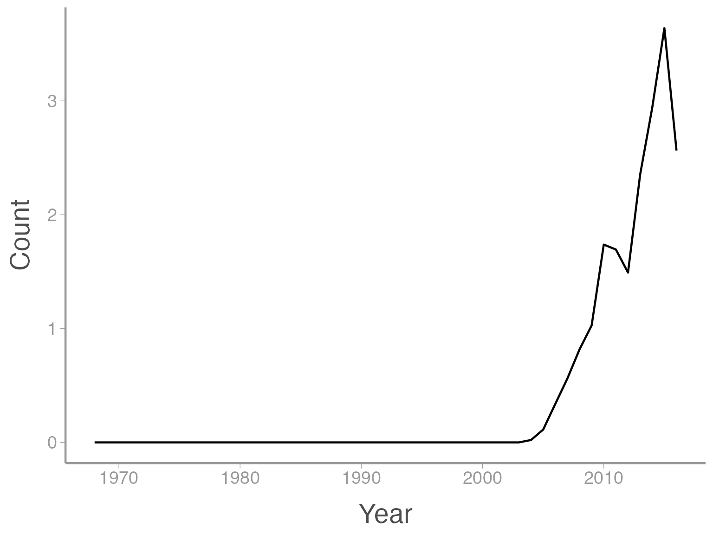
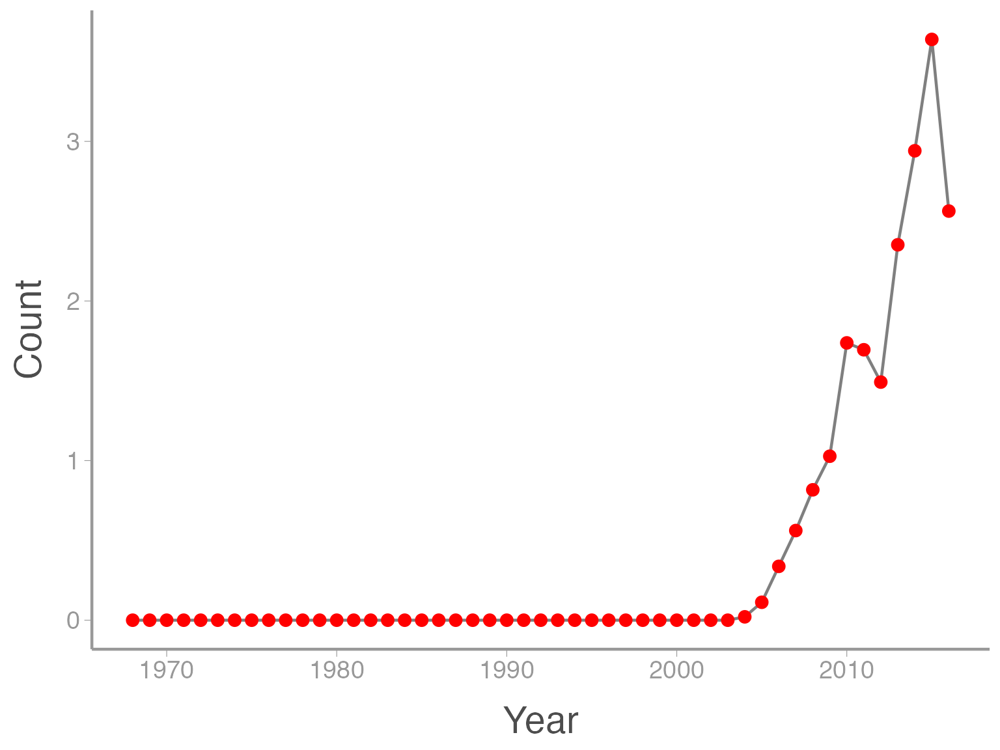
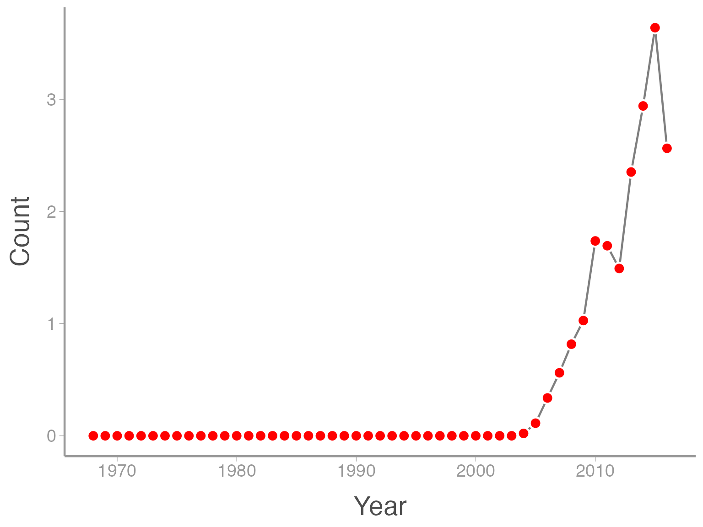
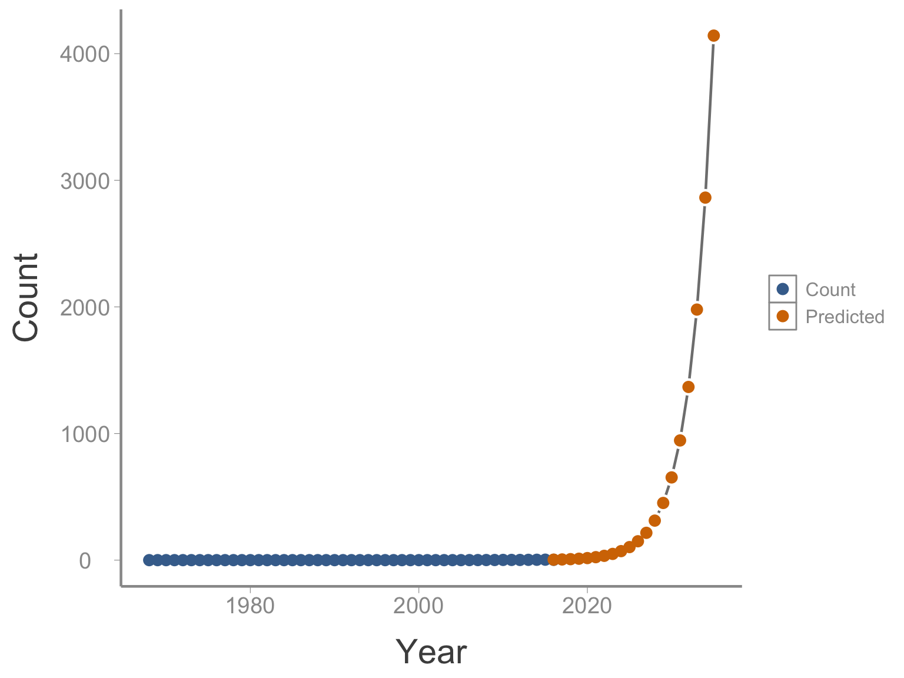

Lab 2: Modeling population dynamics
WILD3810: Plant and animal populations
Spring 2019
lab2.RmdIn this lab, you will learn to model and predict the growth of plant and animal populations using R. Continuing from the first lab, we will continue learning how to use R to create and manipulate objects, with a particular focus on moving from vector objects to data frames. We will also learn about some basic plotting functions to visualize the dynamics of our study populations.
Objectives
Model and visualize density-independent and density-dependent population growth
- Learn/review basic data manipulation tasks, including:
- Subsetting vectors
- Creating and subsetting data frames
- Create summaries of raw data
- Saving data
-
Rfunctions used in this exercise:
Modeling exponential population growth

Image courtesy of Charles J Sharp via Wikicommons (CC BY-SA 4.0)
For this exercise, we will use data from the North American Breeding Bird Survey to model and visualize the rapid population growth of Eurasian collared-doves (Streptopelia decaocto) in the state of Utah. Eurasian collared-doves are an introduced species that, as you will soon see, have been rapidly expanding westward across the United States since they were introduced in Florida in the early 1990’s.
The Breeding Bird Survey is a roadside monitoring program conducted by volunteers across North America every year since the late 1960’s. Each survey route is 25 mils long and surveyors stop every 0.5 mile (50 stops total) to count every bird they see or hear. For this lab, we will use the average number of counts in each year across all BBS routes that are located in Utah.
Getting the data
A summary of the Utah collared-dove counts is included in the course package WILD3810. One thing we did not discuss in lab 1 was what packages are and how to access their content in your current R environment (remember that every time you open RStudio, it creates a new “environment”. This environment stores all of the objects you create during that R session). Packages are ways to share custom R functions and data that do not come with R itself. Packages allow anyone to contribute useful code and data for other R users to use as part of their analyses. The install.packages() function downloads the package onto your computer (note that we use a slightly different function to install the WILD3810 package but 99% of the time you will use install.packages()).
Because the BBS data was added to the package after our last lab, we need to install the most update-to-date version of the package to access it.
## Re-install course website to get the most up-to-date version
devtools::install_github("RushingLab/WILD3810")It’s important to realize that installing a package does not automatically make it’s code and data available with your current R session. When you open R, you have to load the package in order to make its functions and data available in the current session. Packages are loaded using the library() function with the package name as the argument:
## Load the package to make data and code available in current R environment
library(WILD3810)Now that we have loaded the WILD3810 package, we can load the dove data using the data() function. This function is used to load data objects that come with packages:
data("ut_dove_counts")Notice that in the Environment tab in the top right panel, you now see an object called ut_dove_counts. This object holds the data values we will use in this exercise.
Introduction to data frames
In the last lab, we learned about one particular class of R object - vectors. Vectors hold a string of values as a single object. Although useful for many applications, vectors are limited in their ability to store multiple types of data (numeric and character).
This is where data frames become useful. Perhaps the most common type data object you will use in R is the data frame. Data frames are tabular objects (rows and columns) similar in structure to spreadsheets (think Excel or GoogleSheets). In effect, data frames store multiple vectors - each column of the data frame is a vector. As such, each column can be a different class (numeric, character, etc.) but all values within a column must be the same class. Just as the first row of an Excel spreadsheet can be a list of column names, each column in a data frame has a name that (hopefully) provides information about what the values in that column represent.
To see how data frames work, let’s view the ut_dove_counts object. We can do this in several ways. The head() and tail() functions, for example, will print the first and last 6 rows of the data frame:
head(ut_dove_counts)
#> # A tibble: 6 x 2
#> Year Count
#> <int> <dbl>
#> 1 1968 0
#> 2 1969 0
#> 3 1970 0
#> 4 1971 0
#> 5 1972 0
#> 6 1973 0
tail(ut_dove_counts)
#> # A tibble: 6 x 2
#> Year Count
#> <int> <dbl>
#> 1 2010 1.74
#> 2 2011 1.69
#> 3 2012 1.49
#> 4 2013 2.35
#> 5 2014 2.94
#> 6 2015 3.22We can see that ut_dove_counts contains two columns: Year and Count (the counts are actually mean number of Eurasian-collared doves counted across all BBS routes within the state of Utah in each year). Obviously there weren’t many collared-doves in Utah in the late 1960’s/early 1970’s. Several other useful functions for investigating the structure of data frames are str() and summary()
str(ut_dove_counts)
#> Classes 'tbl_df', 'tbl' and 'data.frame': 48 obs. of 2 variables:
#> $ Year : int 1968 1969 1970 1971 1972 1973 1974 1975 1976 1977 ...
#> $ Count: num 0 0 0 0 0 0 0 0 0 0 ...
summary(ut_dove_counts)
#> Year Count
#> Min. :1968 Min. :0.000
#> 1st Qu.:1980 1st Qu.:0.000
#> Median :1992 Median :0.000
#> Mean :1992 Mean :0.340
#> 3rd Qu.:2003 3rd Qu.:0.005
#> Max. :2015 Max. :3.219str() tells us about the structure of the data frame, in this case that Year is an integer object (only whole numbers) and Count is numeric. For both types of data, summary() provides some simple summary statistics for each variable.
Another useful function is nrow(), which tells us now many rows are in the data frame (similar to length() for vectors):
nrow(ut_dove_counts)
#> [1] 48Because the ut_dove_counts data frame has one row per year, the nrow() function is very useful to determining how many years of BBS data we have (remember that!).
Subsetting data frames
As you will see shortly, one of the most common tasks when working with data frames is creating new objects from parts of the full data frame. This task involves subsetting the data frame - selecting specific rows and columns. There are many ways of subsetting data frames in R, too many to discuss so we will only learn about a few.
Selecting columns
First, we may want to select a subset of all of the columns in a big data frame. Data frames are essentially tables, which means we can reference both rows and columns by their number: data.frame[row#, column#]. The row and column numbers have to put inside of square brackets following the name of the data frame object. The row number always comes first and the column number second. If you want to select all rows of a specific column, you just leave the row# blank. For example, if we wanted a vector containing all of the years the BBS data was collected:
ut_dove_counts[,1]
#> # A tibble: 48 x 1
#> Year
#> <int>
#> 1 1968
#> 2 1969
#> 3 1970
#> 4 1971
#> 5 1972
#> 6 1973
#> 7 1974
#> 8 1975
#> 9 1976
#> 10 1977
#> # ... with 38 more rowsHowever, an easier way of doing this is using data.frame$column (where data.frame is the name of the data frame object and column is the name of the column). For example,
ut_dove_counts$Year
#> [1] 1968 1969 1970 1971 1972 1973 1974 1975 1976 1977 1978 1979 1980 1981
#> [15] 1982 1983 1984 1985 1986 1987 1988 1989 1990 1991 1992 1993 1994 1995
#> [29] 1996 1997 1998 1999 2000 2001 2002 2003 2004 2005 2006 2007 2008 2009
#> [43] 2010 2011 2012 2013 2014 2015Notice that if you hit tab after you type the $, RStudio will bring up all of the columns and you can use the up or down buttons to find the one you want.
Sometimes you may want to select more than one column. The easiest way to do that is to use the select() function in the dplyr package:
library(dplyr)
#>
#> Attaching package: 'dplyr'
#> The following objects are masked from 'package:stats':
#>
#> filter, lag
#> The following objects are masked from 'package:base':
#>
#> intersect, setdiff, setequal, union
select(.data = ut_dove_counts, Count, Year)
#> # A tibble: 48 x 2
#> Count Year
#> <dbl> <int>
#> 1 0 1968
#> 2 0 1969
#> 3 0 1970
#> 4 0 1971
#> 5 0 1972
#> 6 0 1973
#> 7 0 1974
#> 8 0 1975
#> 9 0 1976
#> 10 0 1977
#> # ... with 38 more rowsNotice that select requires us to first provide the data frame object (.data = ut_dove_counts) and then we provide the column names (unquoted!) we want to select. In this case we selected both columns but changed in the order. You can also use select to remove columns:
select(.data = ut_dove_counts, -Year)
#> # A tibble: 48 x 1
#> Count
#> <dbl>
#> 1 0
#> 2 0
#> 3 0
#> 4 0
#> 5 0
#> 6 0
#> 7 0
#> 8 0
#> 9 0
#> 10 0
#> # ... with 38 more rowsFiltering rows
To select specific rows, we can use the row# method we learned above, this time leaving the columns blank:
ut_dove_counts[1,]
#> # A tibble: 1 x 2
#> Year Count
#> <int> <dbl>
#> 1 1968 0If we want more than one row, we just put in a vector with all of the rows we want:
ut_dove_counts[1:2,]
#> # A tibble: 2 x 2
#> Year Count
#> <int> <dbl>
#> 1 1968 0
#> 2 1969 0
ut_dove_counts[c(1,30),]
#> # A tibble: 2 x 2
#> Year Count
#> <int> <dbl>
#> 1 1968 0
#> 2 1997 0Note that we can use the square brackets to also subset vectors, in which case we don’t need the comma as long as you tell R which column you want first:
ut_dove_counts$Count[1]
#> [1] 0Sometimes, we may not know the specific row number(s) we want but we do know the value of one of the columns we want to keep. Using the filter() function in the dplyr package allows us to filter rows based on the value of one of the variables. For example, if we want just the 2004 count, we use:
filter(ut_dove_counts, Year == 2004)
#> # A tibble: 1 x 2
#> Year Count
#> <int> <dbl>
#> 1 2004 0.0211Notice the need for two equals signs (==) when telling R we want the row where Year equals 2. Filter makes it very easy to select multiple rows using operators like greater than, less than, etc.
filter(ut_dove_counts, Year > 2004)
#> # A tibble: 11 x 2
#> Year Count
#> <int> <dbl>
#> 1 2005 0.112
#> 2 2006 0.337
#> 3 2007 0.562
#> 4 2008 0.817
#> 5 2009 1.03
#> 6 2010 1.74
#> 7 2011 1.69
#> 8 2012 1.49
#> 9 2013 2.35
#> 10 2014 2.94
#> 11 2015 3.22or a more complicated example:
filter(ut_dove_counts, Year < 1972 | Year > 2010)
#> # A tibble: 9 x 2
#> Year Count
#> <int> <dbl>
#> 1 1968 0
#> 2 1969 0
#> 3 1970 0
#> 4 1971 0
#> 5 2011 1.69
#> 6 2012 1.49
#> 7 2013 2.35
#> 8 2014 2.94
#> 9 2015 3.22
Visualizing data frames using ggplot2
R has very powerful graphing capabilities that make it possible to create data visualizations for reports or publications. As with most tasks in R, there are many ways to create graphs. For example, in the last lab we used the hist() function to create a histogram of the 1000 simulated estimates of \(\hat{N}\). For the remainder of the course, we will focus on learning how to make figures using the ggplot2 package.
Brief introduction to ggplot2
The power and flexibility of ggplot2 come from it’s consistent structure. Although a bit confusing at first, once you get the hang of it the structure actually makes it quite easy to create highly customized visualizations. All plots created using ggplot2 use the same underlying structure:
\[\underbrace{ggplot}_{initiate\; plot}(\underbrace{data = df}_{data\;frame},\; \underbrace{aes(x =\; , y = \;)}_{plot\; attributes}) + \underbrace{geom\_line()}_{geometry}\]
The ggplot() function initiates a new plot. In this function, you tell ggplot2 what data frame you will be using for the plot and you tell it how to map attributes of the data to the visual properties of the figures. Attributes are mapped inside the aes() argument. Attributes usually include location (x-axis and y-axis placement), color, size, shape, line type, and many others. In general, each attribute will be mapped to one column of your data frame.
The ggplot() function simply initiates a graph - if you run just that portion of the code you will get a blank graph. We can see that by creating a new plot showing the relationship between Year (the x-axis of the plot) and Count (the y-axis):
ggplot(data = ut_dove_counts, aes(x = Year, y = Count))
You can see that ggplot created a figure with the correct axes and labels. But no data. That’s because we didn’t tell ggplot what type of geometry to use to represent the data. Geometry refers to the type geometric object(s) we want to use to display the data. Common geometries include points (e.g., scatter plot), lines (e.g., time series), and bars (e.g., histograms). There are many others. Once we add a geometry, we can see the data:
ggplot(data = ut_dove_counts, aes(x = Year, y = Count)) + geom_point()
In this case, a line graph might make more sense:
ggplot(data = ut_dove_counts, aes(x = Year, y = Count)) + geom_line()
It’s also possible to use more than one geometry:
ggplot(data = ut_dove_counts, aes(x = Year, y = Count)) + geom_line() + geom_point()This is reasonable figure showing changes in collared-dove counts across time. But ggplot2 makes it very easy to tweak the way the data is visualized (maybe too easy, you can spend a lot of time tweaking minor details). For example, maybe we want to scale the size of the points based on the size of the counts (so larger points are displayed using larger points). Because we want to map an attribute (size) to a variable (count), we make this change inside of aes:
ggplot(data = ut_dove_counts, aes(x = Year, y = Count, size = Count)) + geom_line() + geom_point()
That’s not exactly what we wanted. Both the line width and the point size are now a function of Count. To make just the points a function of count, we specify size = Count inside of the geom_point() function (anything in the ggplot() function will apply to all geoms):
ggplot(data = ut_dove_counts, aes(x = Year, y = Count)) + geom_line() + geom_point(aes(size = Count))
We can also do things like the change the color of the geometries. In this case, we are not mapping a variable to an attribute (color is not a function of the data values). So these changes happen outside of the aes() argument:
ggplot(data = ut_dove_counts, aes(x = Year, y = Count)) + geom_line(color = "grey50") + geom_point(color = "red")
One last example. My personal opinion is that points plotted over a line look a little better when there is a little white space between the line and the point. In ggplot2 a hack to do that is to put white points underneath the red points that are slightly bigger than the red points. To this we add another geom_point() but manually change the size to be slightly bigger than the red points. Also note that ggplot2 adds the geometries in the order that they are included in the code so we need to add the white points before the red points:
ggplot(data = ut_dove_counts, aes(x = Year, y = Count)) + geom_line(color = "grey50") + geom_point(color = "white", size = 4.5) + geom_point(color = "red", size = 3)Notice that in this case, we aren’t mapping size to any data so we include it outside of aes().
Estimating \(\large \lambda\)
As the lead avian ecologist for DWR, we may want to know the population growth rate of the dove population so we can predict how big it might get in the future. Remember from lecture 3 that:
\[\Large \lambda = \bigg(\frac{N_{T}}{N_0}\bigg)^{\frac{1}{T}}\]
Let’s use the dove counts to estimate \(\lambda\) for this population. Remember that \(T\) is the number of years over which we want to estimate growth. Since the ut_dove_counts data frame has one row for each year, we can easily estimate the total number of years using nrow()
## Create object to store the number of years
## Note that `T` is reserved in `R` as shorthand for `TRUE` so we can't use that as the object name
## Also note that putting the entire line of code inside parentheses will both create and print the object
(t <- nrow(ut_dove_counts))
#> [1] 48Now we can create objects with the first (\(N_0\)) and last (\(N_T\)) counts. Use code below and the subsetting rules we learned about earlier to create these objects:
N0 <-
NT <- Notice that because \(N_0=0\), the formula for \(\lambda\) will not return an estimate (can’t divide by 0!). To get around this, we’ll simply make that count 1. This will slightly change our estimate of \(\lambda\) but not by enough to change our conclusions:
N0 <- 1Now we can estimate \(\lambda\):
(lambda <- (NT/N0)^(1/t))
#> [1] 1.025So over the 48 years of the Breeding Bird Survey, Eurasian collared-doves increased by about 12% per year in Utah.
But that’s not really a very accurate reflection of the actual growth rate because for the first several decades, there were no doves at all. Once the doves arrived in Utah, their population growth was much more explosive. It is probably more instructive to estimate the rate of population growth for only the years when doves were counted in the state (Count > 0). To estimate this rate, let’s first create a new data frame containing only the non-zero counts. What arguments do you need to provide to filter() to create the data frame we want?
ut_dove_counts2 <- filter()Now we’ll recycle the code we created earlier to re-estimate \(\lambda\):
t <- nrow(ut_dove_counts2)
N0 <- ut_dove_counts2$Count[1]
NT <- ut_dove_counts2$Count[t]
(lambda <- (NT/N0)^(1/t))
#> [1] 1.521A nearly 50% increase per year over the 12 years since collared-doves were first documented in the state.
Predicting future population size
Your bosses at DWR want to know what the size of the collared-dove population will be over the next 20 years. Assuming they keep growing at a rate of 1.5207, we can use the discrete population growth model to predict annual counts of collared-doves over this time period (for now, we’ll ignore the fact that BBS counts are an index of abundance and not an estimate). Remember that:
\[N_{t+1} = N_t \times \lambda\]
So if we start with the average count in 2015 (the last year we have data for), we can simply use the \(\lambda\) estimate to predict the count in 2016. Then we use the 2016 prediction to predict the 2017 count. And we continue until we reach the predicted 2035 count.
Creating an new data frame
The first step in our prediction is to create a new data frame that will contain the predicted counts in each year. Creating a new data frame is done using the data.frame() function. In this function, we provide the name of each column followed by a vector containing the values of that column. Just like naming vector objects, the column names cannot start with a number and should not contain spaces.
## Create the new data frame
predicted_doves <- data.frame(Year = seq(from = 2015, to = 2035),
Count = NA)We give this data frame the same column names as the original ut_dove_counts data frame. Unlike when creating objects (where we use the <- operator), you must use an equals sign to create each column in a data frame. To fill in the Year column, we use the seq() function which creates a sequence of values between the from and to values that are supplied as arguments:
seq(from = 2015, to = 2035)
#> [1] 2015 2016 2017 2018 2019 2020 2021 2022 2023 2024 2025 2026 2027 2028
#> [15] 2029 2030 2031 2032 2033 2034 2035We start this sequence at 2015 since that’s the last year we have counts for (and the first one we’ll use to predict future counts). In the Count column, we simply gave it a value of NA, which in R is how you code “missing” data (in this case it’s not missing, we just haven’t created it yet). Essentially, this creates an empty vector that we will in next. Note that is we give a single value when creating the column, R will recycle that value for each element in the vector.
The Count column is not totally unknown - we do know the count in 2015. We can fill in that value using the subsetting rules that we have already learned:
## Fill in the 2015 count based on the value in the original data frame
predicted_doves$Count[1] <- ut_dove_counts$Count[nrow(ut_dove_counts)]Filling in the predicted counts
We are now ready to fill in the missing counts. Because the predicted count in each year is a function of the count in the previous year, we have to fill them in in order. We could do that by just typing out the population growth formula for each year:
## 2016 count
predicted_doves$Count[2] <- predicted_doves$Count[1] * lambda
## 2017 count
predicted_doves$Count[3] <- predicted_doves$Count[2] * lambda
## 2018 count
predicted_doves$Count[4] <- predicted_doves$Count[3] * lambdaBut that is a lot of typing. Notice that in each line of code, we’re doing exactly the same thing just with different values. R has many ways to apply a specific operation (in this case count[t] <- count[t-1] * lambda) multiple times without having to manually write out each separate line of code. One of the most basic ways of doing this is with for loops.
for loops allow us to give R a chunk of code, run that code a set number of times, and each time the code is run change the values that need to be changed. In our case, we need to run count[t] <- count[t-1] * lambda 20 times (once for each year), each time changing the value of \(t\) (\(2, 3, 4, 5,...,20\)). The following code does exactly that using a for loop:
## Fill in predicted counts
for(t in seq(from = 2, to = nrow(predicted_doves))){
predicted_doves$Count[t] <- predicted_doves$Count[t - 1] * lambda
}Inside the for() function, we first provide the index that will change each time we loop through the code. In this case, we call the index t (though we could call it i or j or year or whatever we want). When we place this index symbol in the code, R will replace it with a number. Essentially, at the beginning of each loop R creates in objected called t and assigns it a specific value (e.g. t <- 2).
After providing the index, we tell R what values we want the index to take by providing a sequence of numbers. In this case, we want to predict counts in rows 2-21 of our data frame so we provide a sequence from 2 to 21 (again using the seq() function). Note that instead of writing 21 we had R figure out how many rows were in the predicted_doves data frame and use that as the end of the sequences. Although no necessary, that makes the code more flexible because if the number of years change (we project to 2045 instead of 2035), the for loop will still run the entire sequences instead of just to 2035.
The in between the index and the sequence is R’s way of saying t will take each value in the sequence 2-21.
The for(t in seq(from = 2, to = nrow(predicted_doves))) sets up the parameters of the loop. After that line we enclose the code we want to run within each loop between curly brackets ({}). In this case, we just use the single line that fills in the predicted counts based on the previous year’s count, making sure to include the index t in the appropriate places.
On your own
Use the
headfunction to double check that the first few counts look OK.What is the predicted count in the year 2035?
We also learned that you can estimate \(N_T\) as \(N_0 \times \lambda^T\). Do the two methods provide the same predicted count?
Combining the data frames
Before we visualize the predicted counts, let’s combine the newly create data frame with the original data so our figure shows the entire time series in one plot. First, we need to remove the first row of the predicted_doves data frame so we don’t duplicate the 2015 count:
predicted_doves <- filter(predicted_doves, Year > 2015)Before we combine the data frames, let’s add a new column to each one that tells us whether the counts are predictions or actual counts. The dplyr package has a useful function for adding columns to a data frame called mutate(). This function take the original data frame, the name of the new column and the values of the new variable as arguments:
predicted_doves <- mutate(predicted_doves, Type = "Predicted")
ut_dove_counts <- mutate(ut_dove_counts, Type = "Count")Here, we added a new column called Type to both data frames and gave a value of Predicted for the predicted counts and Count for the actual counts (remember that R will recycle the single value for each row of the data frame). Now we can combine the data frames using the bind_rows function from the dplyr package:
all_doves <- bind_rows(ut_dove_counts, predicted_doves)bind_rows() take two or more data frames as arguments and put them together as a single data frame by stacking them on atop the other (if the data frames do not have the same columns, bind_rows includes all columns in all data frames and fills in NA values for the missing values).
Now we can use the same plotting code to visualize the predicted counts. However, we’ll modify it slightly by mapping the color of the points to the type of count (count vs. prediction)
ggplot(data = all_doves, aes(x = Year, y = Count)) + geom_line(color = "grey50") +
geom_point(color = "white", size = 4.5) + geom_point(aes(color = Type), size = 3)
That’s a lot of doves. This is why exponential population growth is so powerful: from 0 to 14,000 in three decades. Also, notice that gglot2 automatically added a legend showing us what color corresponds to which type of count.
Modeling density-dependent growth
An average of 14,000 collared-doves at each BBS route is obviously way more doves that we expect to actually occur in Utah in 2035. At some point, resources will become limiting and population growth will slow.
In the next homework, we will use BBS data from other states where collared-doves were introduced earlier than in Utah to explore what happens to this species as populations grow beyond their initially small sizes. To create this homework:
-
Create a new R Markdown file from the Homework-2 template:
1a) Click
File -> New File -> R Markdown1b) Click
From Templateand scroll down toWILD3810-Homework21c) In the
Namebox, typeLastnameFirstname-Homework21d) In the
Locationbox, browse to yourWILD3810folder1e) Click
Ok -
Ensure that you can
Knitthe file2a) Change “YOUR NAME HERE” in the header section to your name
2b) Click
Knitto make sure you can knit the .Rmd file Complete the assignment as directed in the .Rmd file
Follow the instructions for submission to upload your completed assignment to Canvas